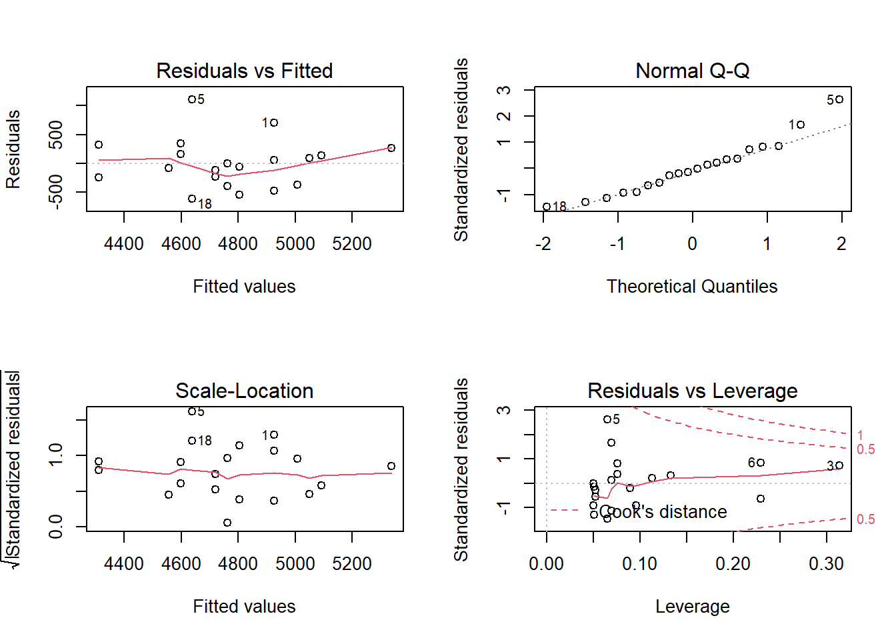

Chapter 14 Interpreting the results
From our model we can predict that a participant with a height of 175 cm will have a VO2max of 4597 ml min-1. We can do this prediction by combining the intercept and slope term multiplied with 175 as x-value. Remember the equation:
\[Y = \beta_0 + \beta_1X\]
As we have estimated this relationship we get the \(\beta\)’s from the regression table and can input 175 instead of X.
Actual values from the regression table can be accessed from a tidy table created with broom. But we can also use coef() to get the coefficients. Using confint() we will get confidence intervals for all parameters in a linear model.
# Coefficients
coef(m1)
# Confidence intervals
confint(m1)The confidence interval can be used for hypothesis testing as can p-values from the summary table. The p-values tests against the null-hypothesis that the intercept and slope are 0. What does that mean in the case of the intercept in our model. The estimated intercept is -2596 meaning that when height is 0 the VO2max is -2596. We are very uncertain about this estimate as the confidence interval goes from -8766 to 3573. We cannot reject the null. Think a minute about what information this test may give in this situation.
The slope estimate has a confidence interval that goes from round(confint(m1)[2], 1) to 75.5 which means that we may reject the null-hypothesis at the 5% level.
14.1 Do problematic observations matter?
In the residual plot we could identify at least one potentially problematic observation. We can label observations in the residual plot to find out what observation is problematic.
cyc_select %>%
mutate(st.resid = resid/sd(resid)) %>%
ggplot(aes(fitted, st.resid, label = subject)) +
geom_hline(yintercept = 0) +
geom_point(size = 3, fill = "lightblue", shape = 21) +
geom_label(nudge_x = 25, nudge_y = 0) +
theme_minimal()The plot shows that participant 5 has the largest residual. If we would do the model without the potentially problematic observation we can see if this changes the conclusion of the analysis.
library(readxl); library(tidyverse)
cyclingStudy_reduced <- cyclingstudy %>%
filter(timepoint == "pre",
subject != 5) %>%
select(subject, group, VO2.max, height.T1)
m1_reduced <- lm(VO2.max ~ height.T1, data = cyclingStudy_reduced)
delta_beta <- 100 * (coef(m1_reduced)[2]/coef(m1)[2] - 1)The delta beta above calculates the percentage change in the slope as a consequence of removing the observation with the greatest residual. Another way to look for potential influential data points would be to check the scatter plot.
cyclingstudy %>%
filter(timepoint == "pre") %>%
select(subject, group, VO2.max, height.T1) %>%
ggplot(aes(height.T1, VO2.max, label = subject)) +
geom_smooth(method = "lm", se = FALSE) +
geom_point(size = 3, fill = "lightblue", shape = 21) +
labs(x = "Height (cm)",
y = expression("VO"["2max"]~(ml^-1~min^-1))) +
geom_label(nudge_x = 1, nudge_y = 0) +
theme_minimal()The plot will show participant 5 has not got a lot of “weight” in the slope. If an equally big residual would have been present in the far end of the range of the height variable, removing it would have made more difference. Since the observation is in the middle of the x’s, it wont be that influential.
There are many ways of doing diagnostics for the ordinary linear model in R. The simplest way is to write plot(m1), this will produce four graphs.
Residuals vs. Fitted shows the fitted (or predicted) values against the residuals. If we would have tried to fit a linear trend to curve linear data, we would have catch it here. We want equal spread all along the fitted values. We test the assumption of homoscedasticity and linear trend.
Normal Q-Q shows residual theoretical quantiles against the observed quantile. The points should to a large degree be on, or close to the line. We test the assumption of normality in the residuals.
Scale location similarly to the residual plot, we can assess assumptions of heteroscedasticity and if we find the trend in the data. We are looking for a straight, flat line and points equally scattered around it.
Residual vs. Leverage is good to find influential data points. If a point is outside the dashed line it changes the conclusion of the regression to a large degree. Remember that we identified participant 5 as a potential problematic case. The Residual vs. leverage shows that number 5 has a large residual value but no leverage, meaning that it does not change the slope of the regression line.

14.2 A more intepretable model
The intercept in model m1 is interpreted as the VO2max when height is zero. We do not have any participants with height zero nor will we ever have. A nice modification to the model would be if could get the intercept to tell us something useful. We could get the model to tell us the VO2max in the tallest or shortest participant by setting them to zero. Even more interesting would be to get the VO2max at the average height.
We accomplish this by mean centering the height variable. We remove the mean from all observations, this will put the intercept at the mean of heights as the mean will be zero.
library(readxl); library(tidyverse)
cyc_select <- cyclingstudy %>%
filter(timepoint == "pre") %>%
select(subject, group, VO2.max, height.T1) %>%
mutate(height.mc = height.T1 - mean(height.T1)) # mean centering the height variable
m2 <- lm(VO2.max ~ height.mc, data = cyc_select)Examine the fit, what happens to the coefficients?
14.3 An exercise
We think that body dimensions influence physiological characteristics. To test if if the stature (height.T1) influence maximum ventilatory capacity (VE.max) fit a regression model, check model assumptions and interpret the results.